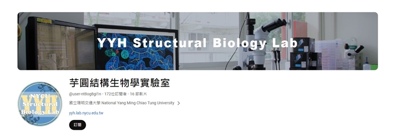
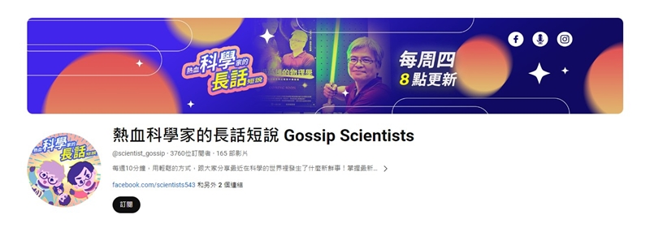
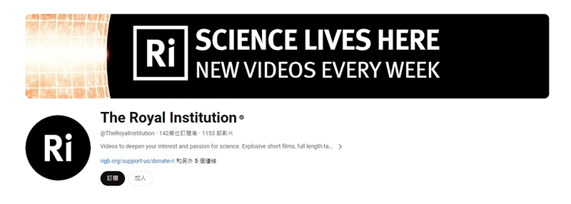

Useful Links
| Name | Description |
|---|---|
| Multi-crystal Data Collection | Assisting users in gaining a general understanding of data quality and the necessary number of crystals for "Multi-crystal data collection". |
| X-ray Absorption Edges | Periodic table interface to X-ray absorption edge tabulations |
| X-ray Anomalous Scattering | Database, Tutorial, MAD Phasing |
| VM (Matthews Coefficient) Calculator | The webpage for calculating the Matthews Coefficient is provided by The Center for Structural Biology at Wake Forest University. |
| Hampton Research | provides tools for crystallography and structural biology |
| MiTeGen | provides tools for crystallography and structural biology |
Recommended Channels


